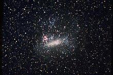

Guia das Gualáxias

Galáxia Grande nuvem de magalhães
Descrição
Grande nuvem de magalhães (comumente abreviada como LMC, do inglês Large Magellanie Cloud) é uma galáxia espiral localizada a cerca de 2,54 milhões de anos-luz de distÂncia da Terra, na direção de Andrômeda.
Dados Interessantes
- Além da Via Láctea, é a galáxia mais estudada
- Suas duasgaláxias satélites, Messier 32 e Messier 110, são visíveis em binóculos
- Sua Distância em relação à Terra ainda não foi bem definida
Outras galáxias:
Galáxia Olho Negro
Galáxia Andromeda